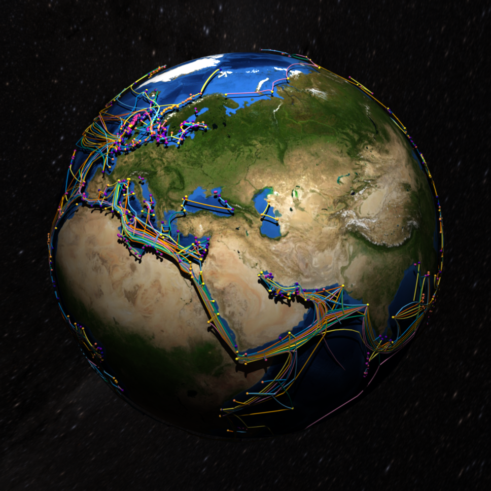
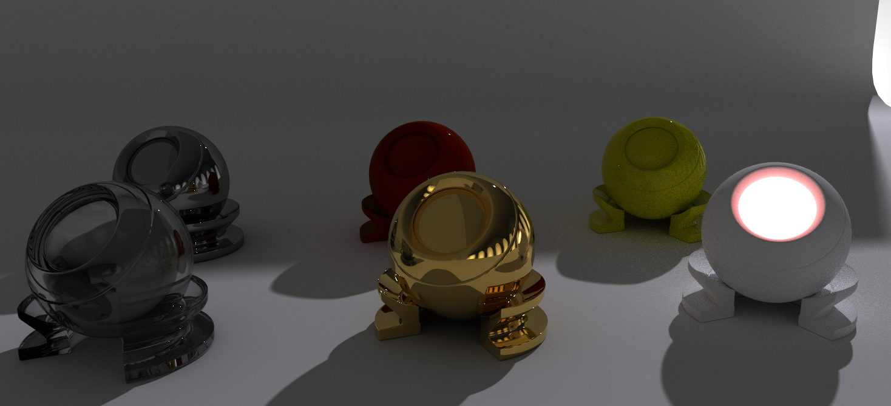
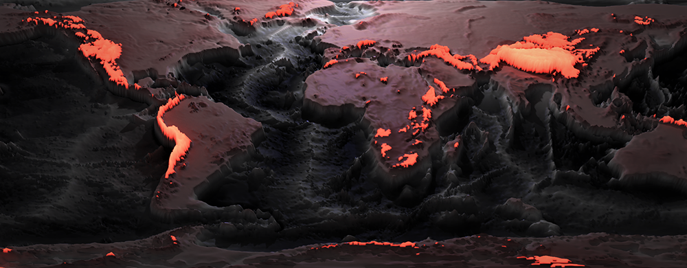
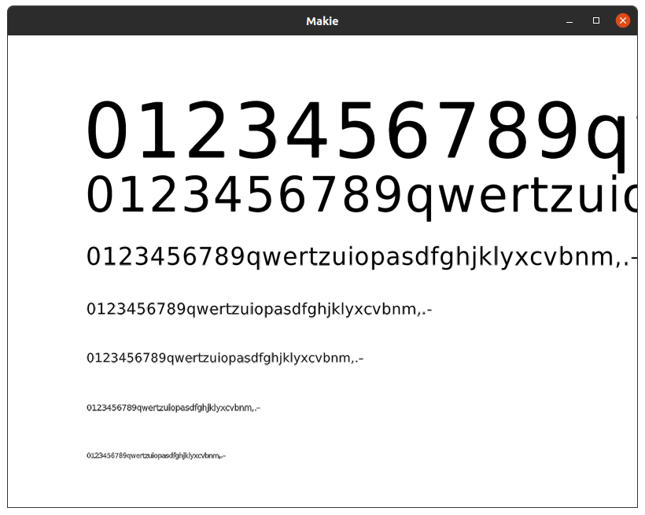
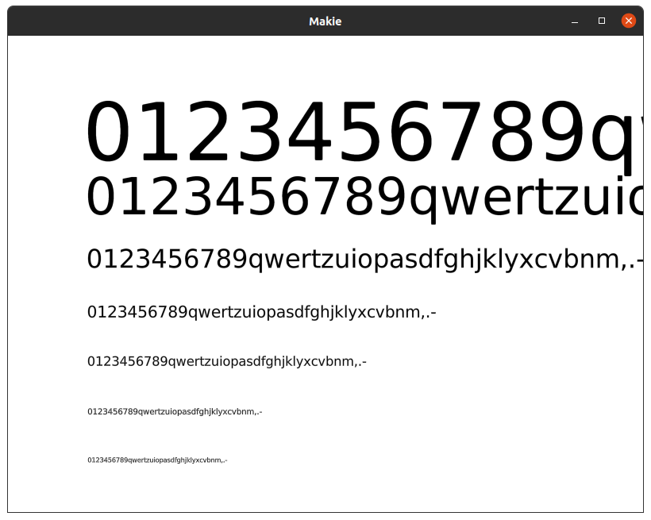
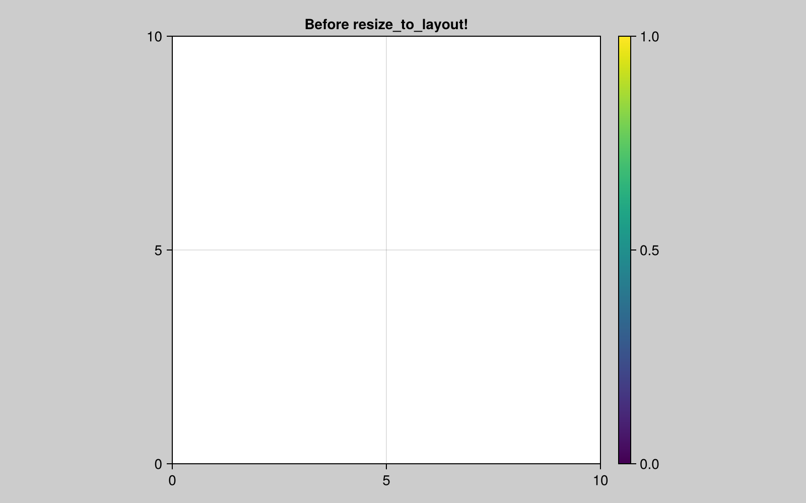
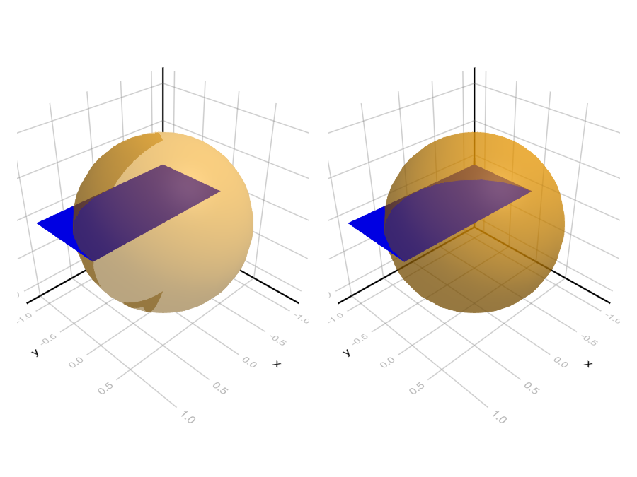
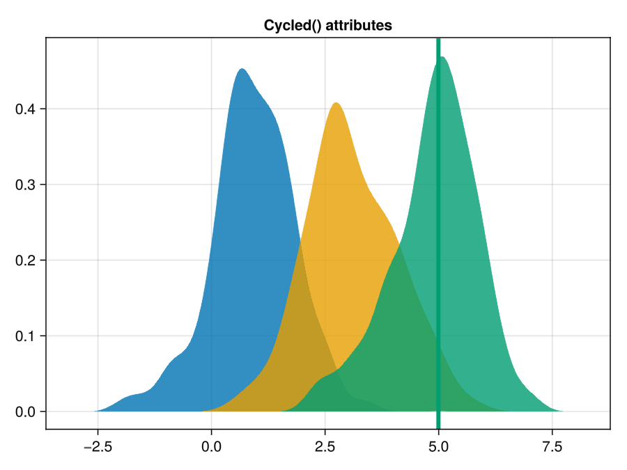
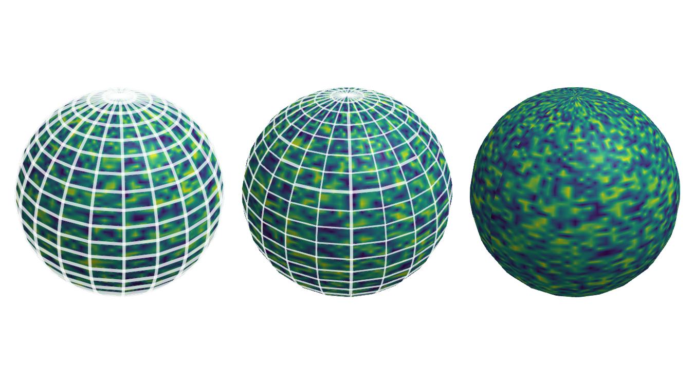
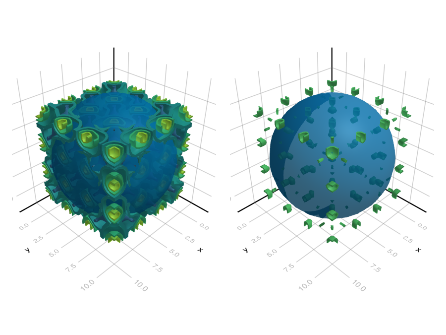

The v0.16 release is one of the biggest Makie releases in quite some time, adding a new backend, big GLMakie improvements and lots of other small improvements.
This blog post will walk you through the main changes!
A new raytracing backend got added, which is based on AMDs high quality and production ready RadeonProRender. It's still experimental and not all Makie features are supported, but it's already at a staged where one can create some pretty amazing visualizations. From the backend docs:
 |  | |
 |
Frederic heroically fixed a very long standing GLMakie bug in the text rendering, that made the text look fuzzy. GLMakie offers high quality text rendering again now :)
| Before | After |
|---|---|
 |  |
In ancient Makie, the Scene type was the main object to plot into. With the integration of MakieLayout, this changed and Figure/Axis became the main user facing types. That turned Scene into a lower level type, but we never removed all the high-level constructs to control limits, axis etc. In this refactor, all higher level constructs got removed and turned the Scene type into a leaner scene graph type. These changes shouldn't be breaking for anyone working with the MakieLayout figure API. Breaking changes for the Scene API are explained in the NEWS.md:
The Scene() constructor doesn't create any axes or limits anymore. All keywords like raw, show_axis have been removed. A scene now always works like it did when using the deprecated raw=true. All the high level functionality like showing an axis and adding a 3d camera has been moved to LScene.
See the new Scene tutorial for more info.
Also, lights got moved from being a plot attributes to being a scene attribute, which is described in the light section
Some figures with aspect ratio restrictions or fixed objects sizes use more or less than the allotted space. With the new command resize_to_layout!, a Figure can be adjusted so it uses exactly the size necessary for its current content.
using CairoMakie
CairoMakie.activate!()
f = Figure(resolution = (800, 500), backgroundcolor = :gray80)
ax = Axis(f[1, 1], title = "Before resize_to_layout!")
Colorbar(f[1, 2])
colsize!(f.layout, 1, Aspect(1, 1.0))
save("resize_to_prev.png", f)
ax.title = "After resize_to_layout!"
resize_to_layout!(f)
save("resize_to_after.png", f)
nothing


Order independent transparency has been on the wishlist for GLMakie for a very long time. It's still an approximation, so you may run into inaccurate transparency, but it should be much better than before:
using GLMakie
GLMakie.activate!()
fig = Figure()
left = LScene(fig[1, 1])
right = LScene(fig[1, 2])
mesh!(left, Rect2f(-1, -1, 2, 1), color = :blue)
mesh!(right, Rect2f(-1, -1, 2, 1), color = :blue)
mesh!(left, Sphere(Point3f(0), 1f0), color = (:orange, 0.5))
mesh!(right, Sphere(Point3f(0), 1f0), color = (:orange, 0.5), transparency = true)
fig
Plots can now be given attributes that pick a specific value from the current cycle using the Cycled() struct, for example to choose the 3rd color from the current palette.
using Statistics
f = Figure()
ax = Axis(f[1, 1], title = "Cycled() attributes")
data = [randn(100) .+ i for i in [1, 3, 5]]
for i in 1:3
density!(ax, data[i])
end
vlines!(ax, median(data[3]), color = Cycled(3), linewidth = 4)
f
To enable better wireframe renderings over meshes, Frederic added a depth shift attribute, which can shift an objects depth after applying all projections:
GLMakie.activate!(inline=true)
f = Figure(resolution=(900, 500))
s = Sphere(Point3f(0), 1)
for (i, depth) in enumerate([-0.01f0, 0f0, 0.01f0])
ax = LScene(f[1, i]; show_axis=false)
mesh!(ax, s, color=rand(100, 100))
wireframe!(ax, s; depth_shift=depth,
transparency=true, color=(:white, 0.5), linewidth=4)
end
f
Volumes used the depth of the cube they're rendered into, which results in bad depth clipping. Now, volume and contour plots emit correct depth values for opaque pixels:
fig = Figure()
left = LScene(fig[1, 1])
contour!(left, [sin(i+j) * sin(j+k) * sin(i+k) for i in 1:10, j in 1:10, k in 1:10], enable_depth = true)
mesh!(left, Sphere(Point3f(5), 6f0))
right = LScene(fig[1, 2])
volume!(right, [sin(2i) * sin(2j) * sin(2k) for i in 1:10, j in 1:10, k in 1:10], algorithm = :iso, enable_depth = true)
mesh!(right, Sphere(Point3f(5), 6f0))
fig
More details about all changes can be found in the NEWS.md and in the release.
There are lots of others who have contributed to this release: